Travelled August 2015Published November 2026
Armenia
Հայաստան
to the shores of Lake Sevan
Photos from Armenia in August 2015, looked at again ten years on: Kapan and Goris in the south, Lake Sevan, and Yerevan.
- Stops
- 4
- Route
- Kapan · Goris · Lake Sevan · Yerevan
- Photographs
- Shaun Ji-Thompson
The route

Kapan
Map ↑
Kapan, the main town of Syunik in southern Armenia, in the Voghji valley below Mount Khustup.
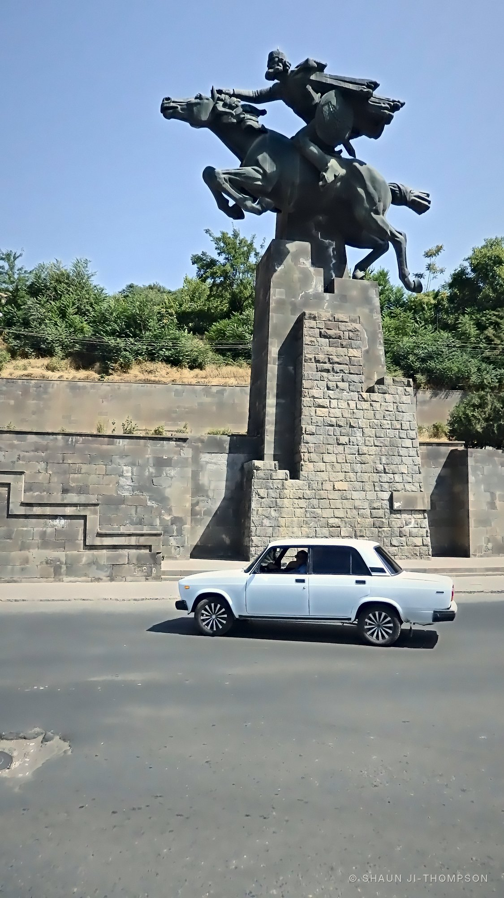
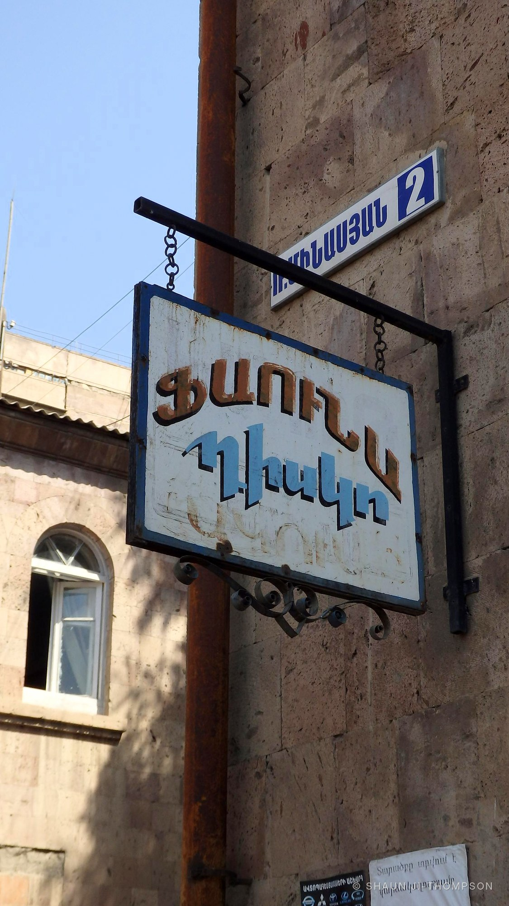
Goris
Map ↑
Goris, in the south of Armenia. Its Soviet-era square sits under the rock pinnacles and old cave dwellings of Old Goris.
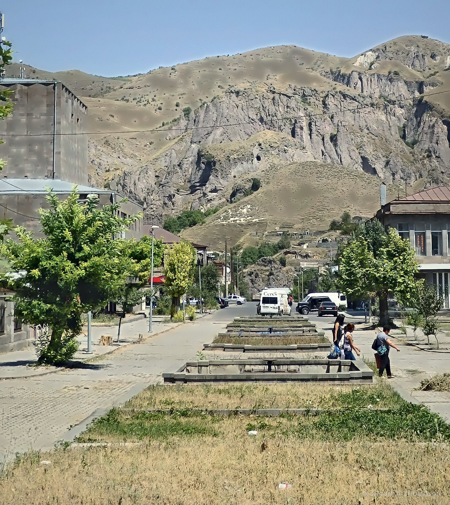
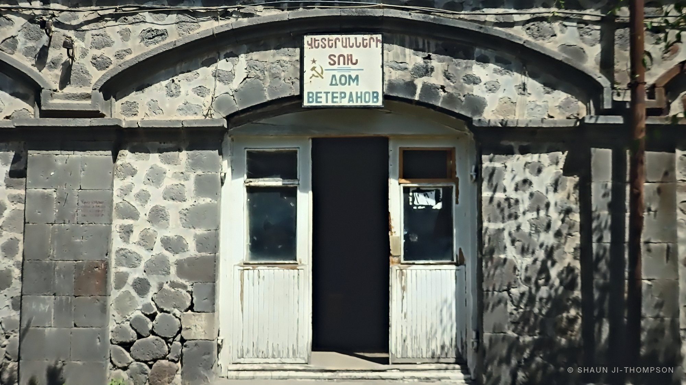

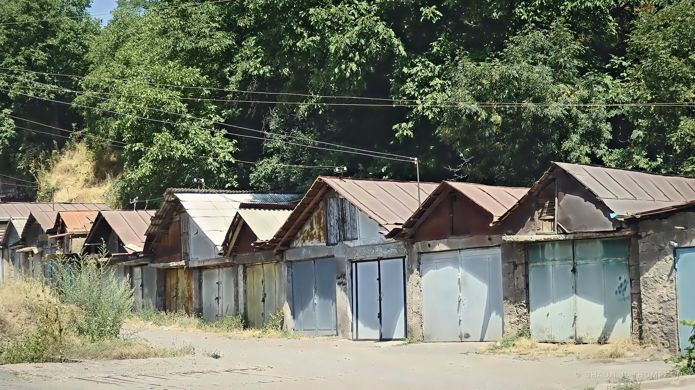
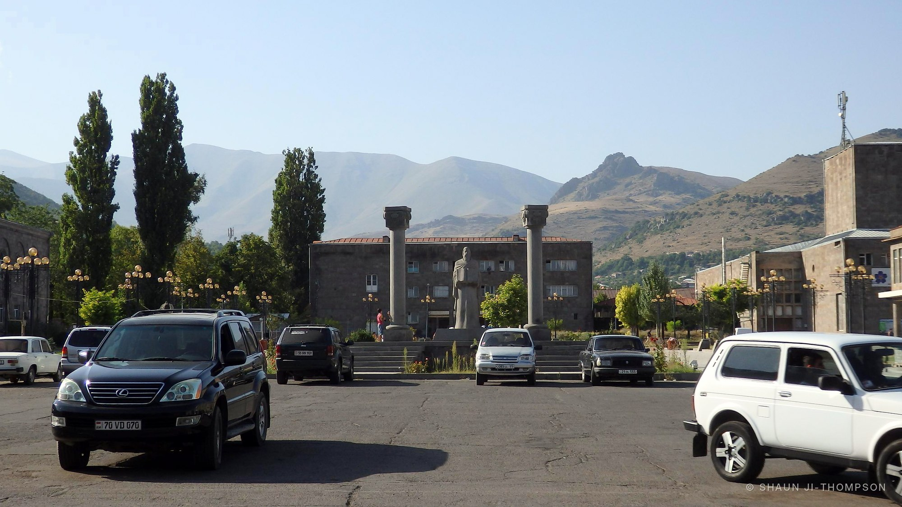
Lake Sevan
Map ↑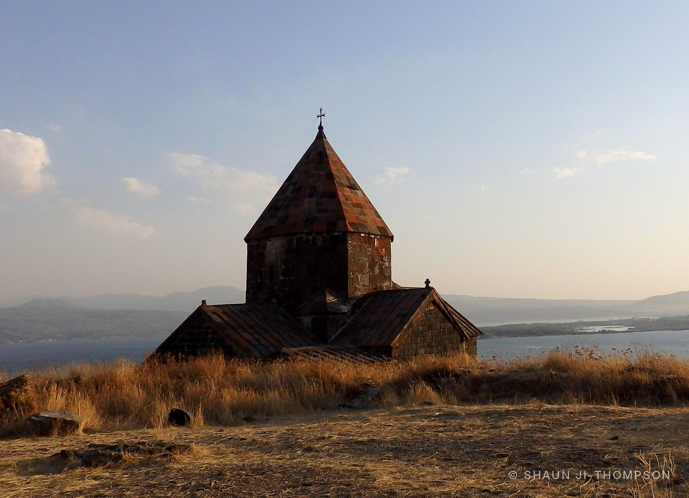
Sevanavank, above Lake Sevan. The lake later became the subject of my score.
Yerevan
Map ↑
Yerevan, with Ararat to the south on a clear morning. From here the road went north to Tbilisi.
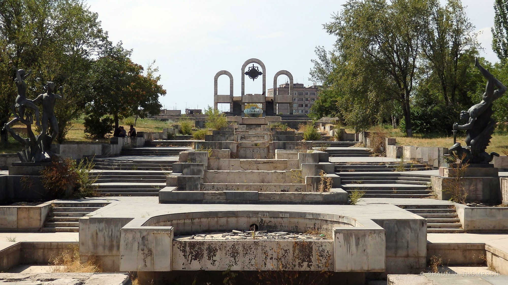
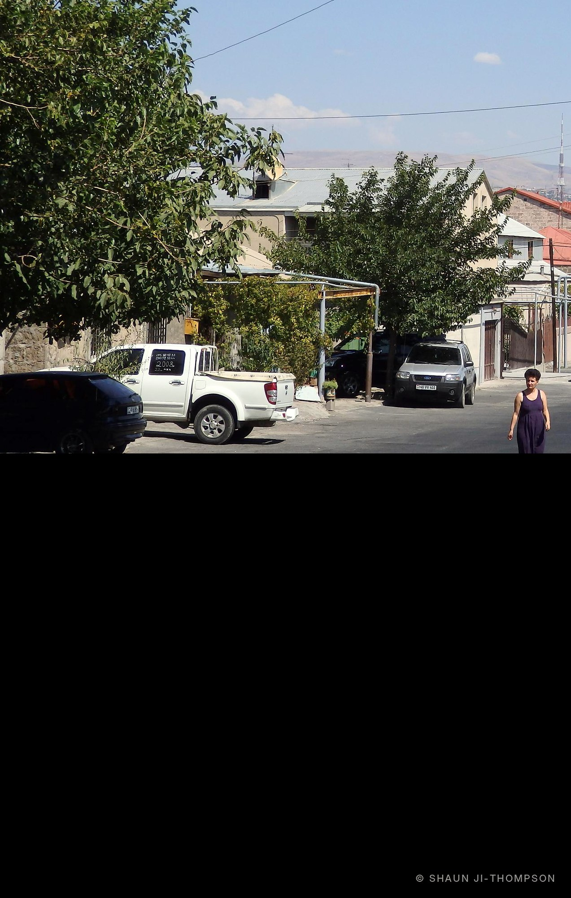
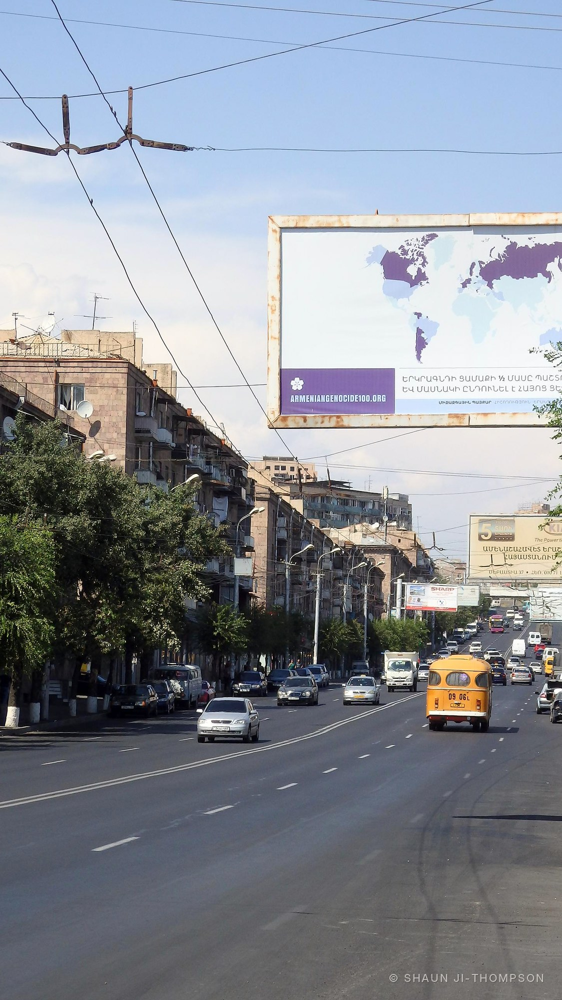
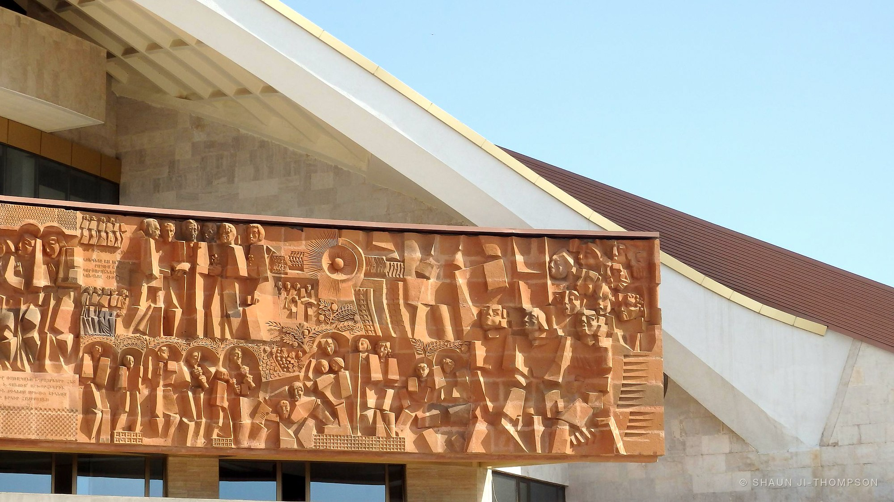
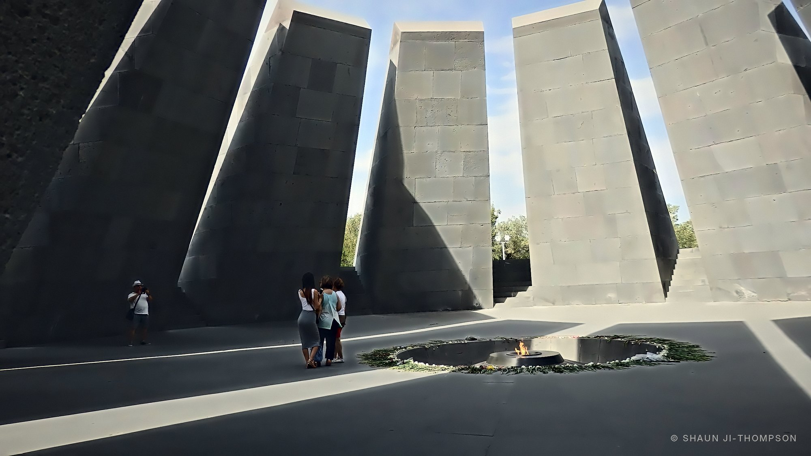
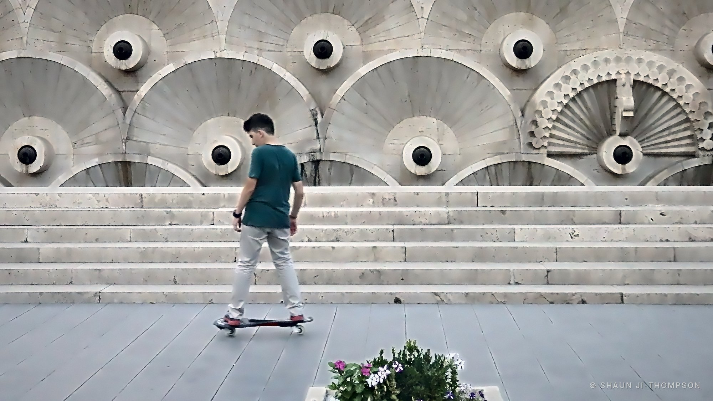
The score · Shaun Ji-Thompson · 2024
À la côte de la mer de Gegham
A piece about Lake Sevan, for wind band.
What did you think?
A reaction, a correction, a place I should go next. I read every note.